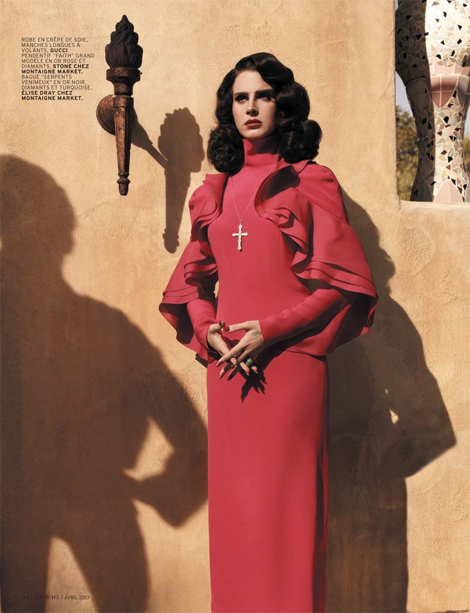
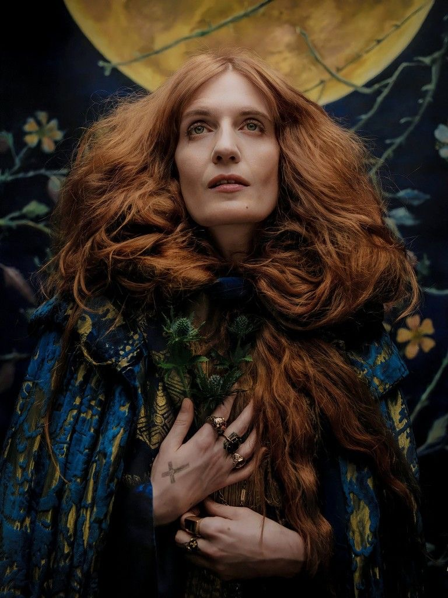
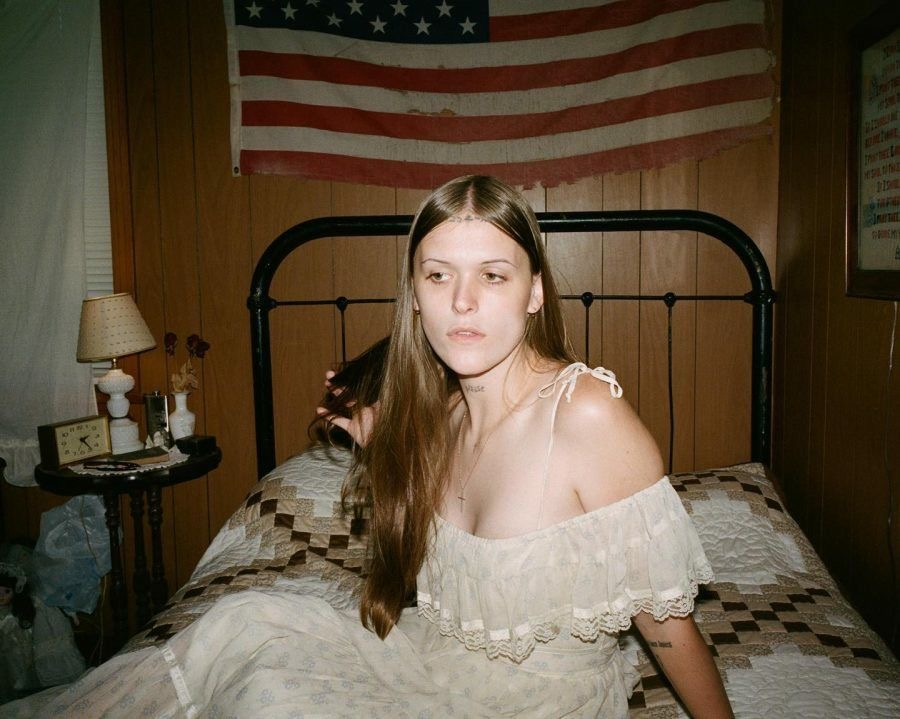

Artists who have Inspired me Artistically...
Lana Del Rey

I've been a fan of Lana Del Rey's music and visuals since I was 13 years old.
She experiments with a lot of different genres of music, but my favorites have always been the ones where she references religion.
@honeymoon
Florence + the Machine

Florence + the Machine is another band that I've been listening to since I was in middle school.
Florence Welch has been a huge inspiration and reason why I love witchy and extravagant religious aesthetics.
@florence
Ethel Cain

Ethel Cain is my most recent inspiration, starting in 2022 after the release of her album Preacher's Daughter.
I fell in love with her Southern Gothic aesthetic and the dark themes she sang about in her music.
@mothercain
Instagram: @faux0buggy